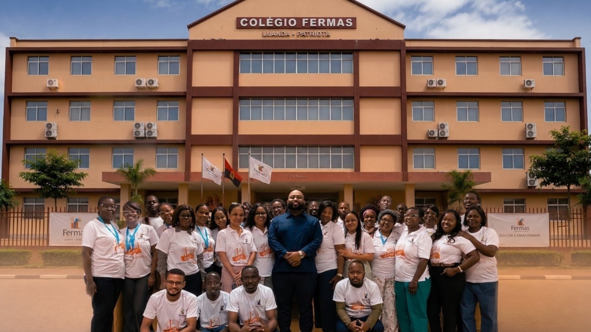

Colégio Fermas
Da iniciação à 12ª classe, um percurso construído com cuidado.
O Colégio Fermas acompanha os alunos desde os primeiros passos na iniciação até à conclusão do ensino secundário, com um ensino próximo, disciplinado e atento a cada criança e jovem.
Sobre Nós
Um colégio que cresce junto com as famílias de Angola.
O complexo escolar privado Fermas iniciou a sua atividade lectiva no dia 6 de fevereiro de 2015, com o ensino pré-escolar, o ensino primário e o I ciclo.
Esta instituição está situada no Lar Patriota, no município de Talatona.
Acreditamos que aprender é também crescer como pessoa. Por isso, unimos rigor académico e acompanhamento próximo, num ambiente onde professores, alunos e famílias trabalham lado a lado.
MISSÃO
O Complexo escolar privado Fermas tem como missão formar indivíduos preparados para transformar positivamente a sociedade, através de uma educação de qualidade, inovadora e orientada para a excelência.
VISÃO
Ser um colégio de referência em Angola, reconhecido pela qualidade do ensino, excelência dos serviços e pelos resultados dos seus alunos, promovendo conhecimento, inovação e melhoria contínua.
VALORES
A identidade do Complexo escolar privado Fermas assenta em valores que orientam a nossa forma de ensinar, servir e relacionar-nos.
O Que Oferecemos
O Complexo escolar privado Fermas desenvolve, em todos os níveis de ensino, um Projecto Pedagógico global, integrado e orientado para a excelência, alinhado com as orientações e os objectivos gerais definidos pelo Ministério da Educação, sem deixar de responder às necessidades e aos desafios da realidade angolana